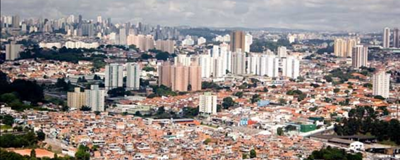
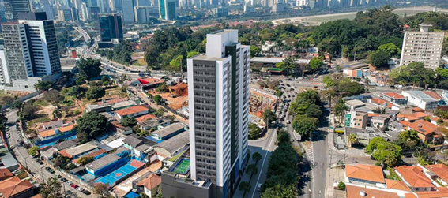
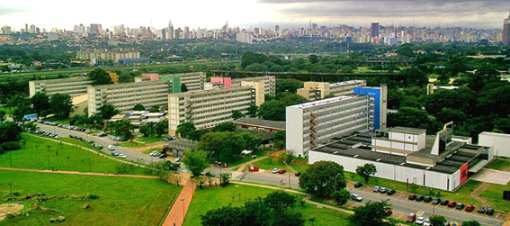
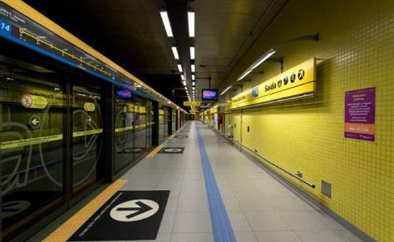

COMO É MORAR NO BUTANTÃ?
- 
- 
- 
O Butantã, como um bairro muito bem estruturado, é conhecido por muitos pela sua alta qualidade de vida, já que possui uma grande quantidade de casas, mansões, comércios ricos, e uma estrutura extremamente variada para agradar todos os tipos de gostos.
UMA GRANDE ESTAÇÃO
- 
A estação da Luz
é localizada no bairro do Butantã e fornece ótimas condições de locomoção para os seus habitantes, com uma estação própria de metrô (Linha 4 – Amarela), com integração com o Terminal de Ônibus da SPTrans. Além disso, é integrada com o terminal metropolitano com linhas da EMTU, que permite o acesso a municípios como Osasco, Embu das Artes, Cotia, Barueri, Itapevi, entre outros, sendo próximo de rodovias como Raposo Tavares e Castelo Branco.